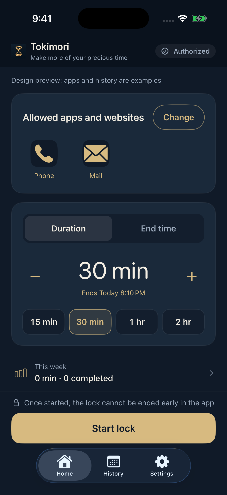
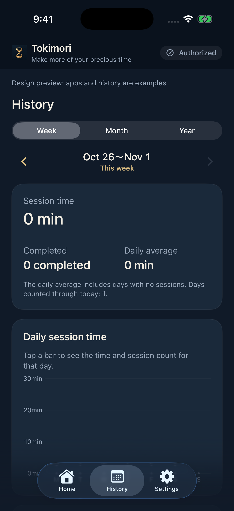

Choose what stays available.
Select the apps and websites you need during a lock. Check that essential calls and communication work on your device before you begin.
LESS SCROLLING. MORE LIVING.
Open that book. Be here for a conversation.
Give yourself a break from your phone.
Keep the apps and websites you need.
Choose how long to restrict the rest.
Tokimori uses iPhone Screen Time to help you
set a clear boundary around distracting apps.
For iPhone · English & Japanese · Five starts free

A LITTLE SPACE FROM YOUR PHONE
A study session, a quiet evening, or time with someone.
Set aside a period when distracting apps stay out of reach.
You decide what that time is for.
HOW IT WORKS
No Tokimori account to create. Your previous settings are kept for next time.
Select the apps and websites you need during a lock. Check that essential calls and communication work on your device before you begin.
Use the focus timer to set a duration, or pick the time when your session should end.
Confirm your end time and allowed apps. Once started, you cannot end the lock early within Tokimori.
Screen Time permission is required. Tokimori cannot prevent permission changes in iOS Settings or lock every system feature. iOS and device conditions may delay restrictions or their release. Allowing a browser does not automatically allow websites; select websites separately.
AUTOMATIC LOCKS
Create up to three weekday schedules with start and end times.
Schedules are off by default. Enable one to use it from its next occurrence.
Scheduled starts require Screen Time access and either an available free start or a verified, unexpired plan. Manual and scheduled starts share the same free allowance. An active lock takes priority, so a conflicting scheduled start is skipped. iOS may delay a start; the original end time is kept. Open Tokimori after a plan renews to refresh access. See Support for overlap, time-zone and other scheduling conditions.

YOUR TIME, OVER TIME
Look back by week, month or year.
See total session time, completed sessions
and a daily average, at your own pace.
Session time is based on a lock’s recorded start and end. It does not measure attention, productivity or how much screen time you saved. Settings and history stay on your device and may be lost when the app is deleted. Tokimori has no dedicated account or cloud sync.
SIMPLE PLANS
See whether Tokimori fits your day before choosing a plan.
Successful manual and scheduled starts count toward the same allowance.
Using the free allowance does not start a paid subscription automatically.
Keep starting sessions with either plan.
Billed monthly
A month at a time.
Billed yearly
One payment for the year.
Both auto-renewing plans offer the same functionality and remove the limit on session starts. History and settings remain accessible without a plan. Prices and currencies vary by App Store country or region; check the purchase screen for your local price and terms. Purchases use Apple’s in-app payments. Manage or cancel subscriptions in Apple Account settings. Deleting the app does not cancel a subscription.
QUESTIONS
Tokimori is a tool for people who want to stop scrolling and make time away from their phone. It provides timed app restrictions, not medical treatment or a guarantee that screen time will decrease.
Yes. Choose the apps and websites that should stay available before starting. Tokimori restricts the rest, except for some system features.
There is no early-unlock control inside Tokimori. This does not prevent you from changing Screen Time permission in iOS Settings. Device and iOS conditions can affect restrictions.
Tokimori records lock sessions. The history is not a measurement of app usage, actual focus or screen time saved.
For iPhone with iOS 17 or later.
Available in English and Japanese.